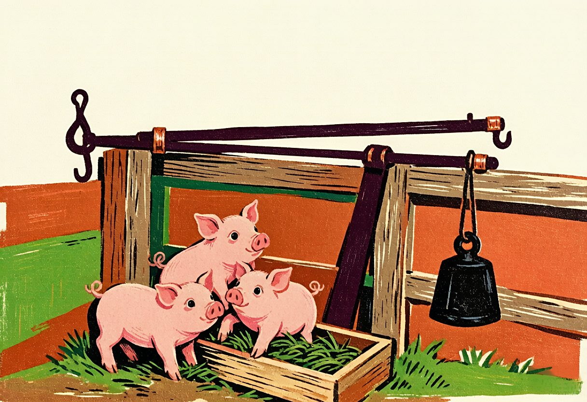

1968年，随着那波上山下乡的潮流，我来到了崇明东风农场的一个不起眼的小小养猪场。养猪场总共才十来个人，分成饲养组和青料组。我是青料组的，负责种植喂猪的青饲料。青饲料品种不少，主要是一种名称叫苦麻菜的植物，它像韭菜那样，可以割一茬、长一茬。
养猪场里，我是唯一的知青，初来乍到，略显孤单。但很快，那些刚出生的小猪们用它们圆润的身子和亮晶晶的眼睛，填补了了我的孤独。
每天给猪棚送菜时，我都会忍不住停下脚步，看看它们。这些小家伙，圆乎乎、胖嘟嘟的，一身粉红，满身软绒，那乌溜溜的眼珠子会盯着人看，好像在问：“你谁啊？”。那细细的尾巴一甩一甩，像孩童的小手，总是忙个不停，有时会打起卷儿，像西瓜蒂上的那种小藤条。
为了监测这些小家伙们的成长，每间隔一定的时间，兽医就会给每只小猪称重。
那一天，整个猪棚就变成了一个欢乐的游乐场。小猪们似乎知道这是一个特别的日子。，它们逮住机会，活蹦乱跳，满地撒欢。它们既活络又机灵，一只一只地抓起来可不容易，饲养员都出动了，来帮忙捉猪，然后人手一只猪，排好队，交给兽医称重。
奇妙的是，即使是最淘气的小猪，到了兽医手里也突然变得乖顺，它们好像能感受到这是一种成长的仪式，不再闹腾，顺从的过磅。
兽医用来称重的杆秤，对我来说是个新奇的发现。那是一把我从没见过的硕大无比的杆秤。它的模样与菜场摊贩手中灵巧的杆秤没什么两样，但是它的体积和普通的秤相比，简直是巨人与侏儒的差别。黑紫的杆身有扫把柄那么粗，足足有1米半长，杆头、杆尾用锃亮的铜皮包裹；那个铸铁秤砣少说也有六、七斤重。
我对兽医表达了我的疑惑，他微笑着解释说，这秤能称的不仅是小猪，大猪也行。最重能称到300斤呢！听他这么一说，我开始对这个秤另眼相看，它不仅是称重的工具，它还是个见证，见证着小猪成长的每一个瞬间，也见证着我们的期待。
年底的时候，场长让我去县城的南门校验秤，这对我来说是个好机会，我可以顺便去南门港逛逛，吃一顿好的，如果时间来得及，甚至还能去泡个澡。
饲养场长又语重心长的嘱咐我：一定要小心，这不仅是校验一把秤的准确性，更是对我们的小生命的负责。
我接了任务，取了几张旧报纸，把秤杆、秤钩仔细的包好，又取了个塑料袋，装上了秤砣，捧在手里，小心翼翼地向南门出发。
这一路上，我深感责任重大。这不仅仅是保证一个工具的准确性，更是对那些依靠我们照料生长的小生命的一份承诺和期待，
直到今天，那群小猪，那杆秤，还会不时的出现在我的记忆里，让我想起那段简单而温馨的日子。
（本文刊登在2024.5.21《杨浦时报》）